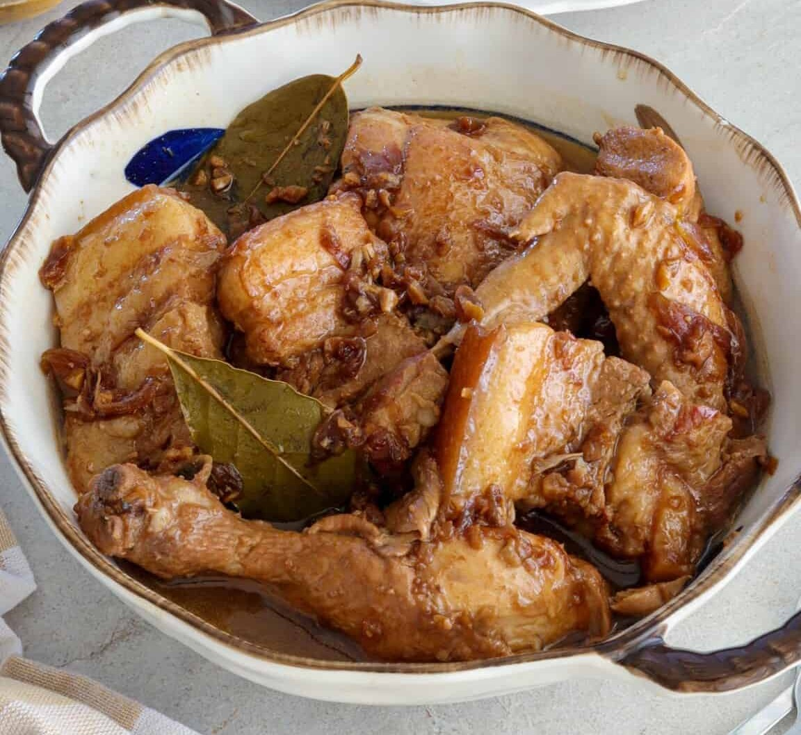

📍 Tagalog Region
⏱ 60 min
Chicken & Pork Adobo
Long before Spanish rule, Filipinos preserved meat in vinegar and salt. Soy sauce and bay leaf later made adobo the unofficial national dish.
View Recipe →